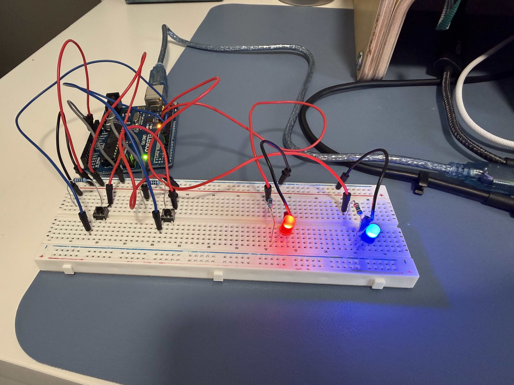
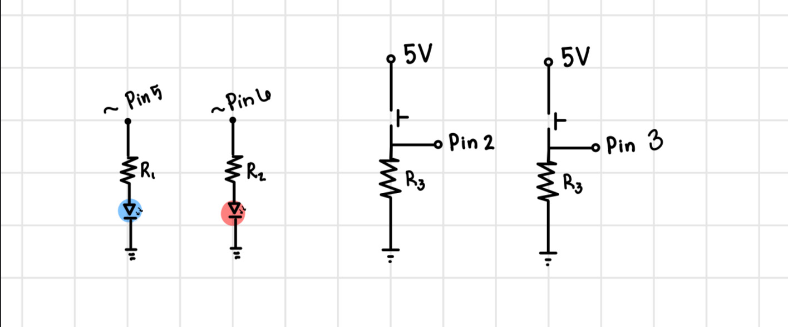
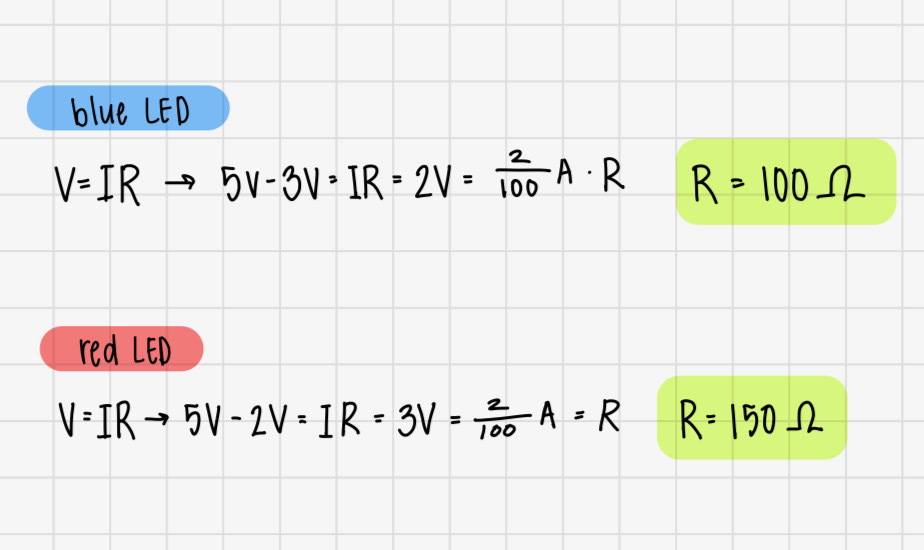

For this assignment we were tasked with creating a webpage that interacts with and changes something in the real world and vice versa, doing something in the real world changes something on our webpage. I create a circuit with two buttons and two LEDs. When a button is pressed the corresponding LED lights up. This changes the color of the "ink" in the drawing tool. On the webpage, there is a slider that changes the brightness of LEDs.

This is an image of my final circuit built on a breadboard and connected to the Arduino which is connected to my computer.

Here is the schematic diagram for my circuit. I have two buttons connected to digital pins 2 and 3, and two LEDs connected to pwm pins 5 and 6. Each button and LED has their own resistor.

To choose the right resistors for each branch, I started by measuring the voltage drop through each LED.
Each LED had a voltage drop between 1.8 and 3.0 volts, so I rounded up to either 2.0 or 3.0 volts for each LED.
I knew the arduino provided 5 volts of power and I wanted a current of 20 mA. Then I used Ohm's Law (V = IR)
to calculate the resistance needed. The result was a 100 or 150 ohm resistor for each branch.
To ensure that my the current would be 20mA or lower, I rounded up, using a 220 ohm resistor for each LED branch.
I used a 10k ohm resistor to act as a pull-down resistor on the button branch,
as recommended in class. The purpose of a pull-down resistor is to ensure that the
input pin reads LOW when the button is not pressed. When the button is not pressed,
Pin 2 might pick-up additional noise from the environment causing it
to read a non-zero voltage. Adding a resistor that connects Pin 2 to Ground,
ensures the pin will read zero. I used a 10k ohm because it limits the amount of
current flowing through the circuit while still effectively pulling the pin to ground.
Here is a video of the final circuit: Circuit Functionality
Due to the size of the video, I couldn't create a high quality GIF that
VS code would accept that also showed all of the functionality.
The lights turn on when the corresponding button is pressed. If the light is turned on, the color of the
"ink" changes. The brightness slider changes the brightness of the the LEDs.
int red = 5; // PWM pin for red LED
int blue = 6; // PWM pin for blue LED
int buttonPinA = 2; // set button A to pin 2
int buttonPinB = 3; // set button B to pin 3
int buttonStateA = 0; //set the state for button A to 0
int lastButtonStateA = HIGH; //set the previous state for button A to high
int buttonStateB = 0; //set the state for button B to 0
int lastButtonStateB = HIGH; //set the previous state for button B to high
int brightness = 0; // set intial brightness to zero
bool redOn = false; // set red LED to off
bool blueOn = false; // set blue LED to off
void setup() {
pinMode(buttonPinA, INPUT); //set button A as an input
pinMode(buttonPinB, INPUT); //set button B as an input
pinMode(red, OUTPUT); //set red led as an output
pinMode(blue, OUTPUT); //set blue led as an output
analogWrite(red, 0); //set brightness of red LED to 0
analogWrite(blue, 0); //set brightness of blue LED to 0
lastButtonStateA = digitalRead(buttonPinA); //read in button a state and the previous button state equal to it
lastButtonStateB = digitalRead(buttonPinB); //read in button b state and the previous button state equal to it
Serial.begin(9600); //intiate serial
}
void loop() {
if (Serial.available() > 0) { // if there is serial data
String valStr = Serial.readStringUntil('\n'); //read it
brightness = valStr.toInt();
if (Serial.available() > 0) { // if there is serial data
String valStr = Serial.readStringUntil('\n'); //read it until you get a new line
brightness = valStr.toInt(); //convert the string value to an int
}
}
buttonStateA = digitalRead(buttonPinA); //set button state for A to read value
buttonStateB = digitalRead(buttonPinB); //set button state for B to read value
if (buttonStateA == LOW && lastButtonStateA == HIGH) redOn = !redOn; // if the button state is low and previous state was high, change the boolean value to the opposite
if (buttonStateB == LOW && lastButtonStateB == HIGH) blueOn = !blueOn; // if the button state is low and previous state was high, change the boolean value to the opposite
lastButtonStateA = buttonStateA; //set the last button state equal to the current state
lastButtonStateB = buttonStateB; //set the last button state equal to the current state
if (redOn == true) { //if the red LED is on
analogWrite(red, brightness); //write the red LED to the brightness value
} else { //if the LED is off
analogWrite(red, 0); //write the LED to a brightness of 0
}
if (blueOn == true) { // if the blue led is on
analogWrite(blue, brightness); // write the blue led to the brightness value
} else { // if the LED is off
analogWrite(blue, 0); //swrite the LED to a brightness of 0
}
Serial.print(redOn ? 1 : 0); // send the state of led to java script
Serial.print(","); // send the state of led to java script
Serial.println(blueOn ? 1 : 0); // send the state of led to java script
delay(50); //delay by 50 milliseconds
}
HTML: Link to HTML Code on GitHub
let port; //declare serial connection betweem browser and arduino
let reader; //declare reader to read data from arduino
let writer; //declare writer to send data to arduino
let redState = 0; //declare state of red LED to be 0
let blueState = 0; //declare state of blue LED to be 0
let serialBuffer = ""; // buffer for incoming serial data
// p5.js setup
function setup() { //create setup function
createCanvas(windowWidth, windowHeight); //create a canvas that is the size of the screen/window
background(255,255,255); //make the canvas background white
// Connect button
const connectBtn = document.getElementById("connectBtn"); // connects to HTML button
const statusText = document.getElementById("status"); // connects to HTML status text
connectBtn.addEventListener("click", async () => { //button creates a connection to serial port
try {
port = await navigator.serial.requestPort(); //opens connect to arduino pop-up
await port.open({ baudRate: 9600 }); //sets baud rate to 9600 to match arduino
writer = port.writable.getWriter(); // for sending data
const decoder = new TextDecoderStream(); // tool to decode data
port.readable.pipeTo(decoder.writable); //sends incoming data to decoder
reader = decoder.readable.getReader(); //reads decoded data v
statusText.textContent = "Connected!"; // update status text if arduino successfully connected
await sendBrightness(0); // send initial brightness value to arduino
readSerial(); // start reading serial
} catch (err) { //catches errors
console.error("Failed to connect:", err); // prints error message to console
statusText.textContent = "Failed to connect"; // update status text if arduino failed to connect
}
});
const slider = document.getElementById("sliderA"); // connects to HTML slider
const valueDisplay = document.getElementById("valueA"); // connects to HTML value display
slider.addEventListener("input", async () => { // listens for slider input changes
valueDisplay.textContent = slider.value; // shows current value in text
await sendBrightness(Number(slider.value)); //sends brightness number to arduino
});
frameRate(30); // limit draw updates
}
// Read serial data from Arduino
async function readSerial() { //receiving data from ardiuno
while (true) { //setup constant data "listening"
try {
const { value, done } = await reader.read(); // read in serial data and check that there is still data to read
if (done) break; //if reading is done, break the loop
if (!value) continue; //if there is still reading to be done, keep the loop open
serialBuffer += value; // append incoming data to buffer
const lines = serialBuffer.split("\n"); // split buffer at new line element
for (let i = 0; i < lines.length - 1; i++) { // iterate through all complete lines
const line = lines[i].trim().replace("\r", ""); // clean up line
const parts = line.split(","); //split first data at the comma
if (parts.length >= 2) { // check if there are at least two parts
redState = Number(parts[0]); // set the first value to indicate the state of the red LED
blueState = Number(parts[1]); //set the second value to indicate the state of the blue LED
}
}
serialBuffer = lines[lines.length - 1]; //saves any unfinished data chunks
} catch (err) { //catches errors
console.error("Serial read error:", err); //print error to console
break; //stop the loop
}
}
}
async function sendBrightness(value) { //fucntion to send brightness toa rduino
if (!port || !writer) return; //check that everything is connected
const msg = `${value}\n`; // create message string with newline
await writer.write(new TextEncoder().encode(msg)); //convert string to bytes and send to arduino
}
// p5.js draw loop
function draw() { //draw function
if (mouseIsPressed) { //if the mouse is pressed
if (redState === 1 && blueState === 1) { //if both red and blue LEDs are on
fill(150, 0, 150); //set fill color to purple
} else if (redState === 1) { //if only red is on
fill(255, 0, 0); //set ink color to red
} else if (blueState === 1) { //if only red is on
fill(0, 0, 255); //set ink color to blue
} else { // if neither are on
fill(255); //set the fill color to white
}
circle(mouseX, mouseY, 40); //drawing shape is a circle with a diameter of 40
}
}